2SortingAndSearching
Table of Contents
Introduction
Sorting and Searching are some of the most important things to know in computer science. Here we will get our feet wet with some of the more basic but nonetheless important applications of sort and search.

1 Sorting
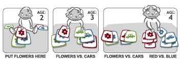
We now will look at sorting: rearranging elements of an array - a.k.a. permuting the array - so that each element is less than or equal to its successor.
Quick Word on What Sorted means
Sorting means to put into some well-defined order.
In having an ordered or sorted array we have to now what it means for one element to be less than another. When the elements are numbers it is obvious. When the elements are strings of text character, we can think of lexicograhic ordering: one element is less than another if it would come before the other in a dictionary.
When elements are some other form of data we have to define what "less than means."
As long as we have some clear notion of "less than", we can determine whether an array is sorted.
When sorting we must have a key (which we'll call a sort key when we're sorting) that is the specific type of information to be sorted, and in addition to a key, the elements that we sort usually will include what we call satellite data.
Satellite data is the information that is associated with the sort key and should travel with it when elements are moved around.
Suppose we were sorting a bookshelf with the sort key being the author's name, then the satellite data is just the book itself.
Another example would be in sorting a phone book. Here the sort key would be the name and the satellite data would be the address and phone number.
In implementing sorting algorithms, you have to make sure that you move the satellite data associated with each element, or at least a pointer to the satellite data, whenever you move the sort key.
Quadratic Sorts
The two following sorts (selection and insertion) are classified as quadratic sorts of which are defined by having a worst-order of complexity of \(O(n^2)\). These are known to be the simplest of sorts. We exclude the simple quadratic known as bubble sort as it is the most trivial.
Selection Sort
Bookshelf Example
Suppose we want to sort some books on a bookshelf by author last name. If we were to use selection sort in our head this is how we'd sort them.
Go through the entire shelf and find the book whose author's name comes earliest in the alphabet. Lets say that is by Louisa May Alcott. (If the shelf contains two or more books by this author, choose any one of them.)
Swap the location of this book with the book in slot 1. The book in slot 1 is now a book by an author whose name comes first alphabetically.
Now go through the bookshelf left to right starting with the book in slot 2 to find the book in slots 2 through n whose author name comes earliest.
Suppose that it's by Jane Austen. Swap the location of this book with the book in slot 2, so that now slots 1 and 2 have the first and second books in the overall alphabetical ordering. Then do the same for slot 3, and so on. Once we have put the correct book into slot n-1, we are done, because there's only one book left and it's in slot n where it belong.
Back to Array Examples
For the above we can think abstractly as having the following pseudocode with bookshelf being replaced by arrays.
Procedure SELECTION-SORT(A,n)
Inputs:
A: an array.
n: the number of elements in A to sort.
Result: The elements of A are sorted into nondecreasing order.
1. For i = 0 to n-1:
A. Set smallest to the index of the smallest element in the
subarray A[i..n-2] (we said n - 1 in the bookshelf example
but now that we're working with arrays we start at 0 not 1)
B. Swap A[i] with A[smallest].
But in practice we need more depth. The core of selection sort is in selecting the smallest element in A[i..n-1] (for placing it in the sorted part of the array), which is a variant on linear search. First declare A[i] to be the smallest element seen in the subarray so far, and then go through the rest of the suabrray, updating the index of the smallest element every time we find an element less than the current smallest.
Pseudocode & Code
Procedure SELECTION-SORT(A,n)
Inputs and Result: Same as above.
1. For i = 0 to n-1:
A. Set smallest to i.
B. For j = i + 1 to n - 1:
i. if A[j] < A[smallest], then set smallest to j.
B. Swap A[i] with A[smallest].
Basic C example:
void selection_sort(int a[], int n) { int i, j, smallest; for (i = 0; i < n; i++) { smallest = i; for (j = i; j < n; j++) if (a[j] < a[smallest]) swap( a, i, j); } }
Note this procedure has "nested" loops, with the loop of step 1B within the loop of step 1.
The inner loop performs all of its iterations for each individual iteration of the outer loop. Notice that the starting value of j in the inner loop depends on the current value of i in the outer loop.
This is an illustration on how selection sort works:

If you wanted to use a loop invariant to argue that the SELECTION-SORT procedure sorts the array correctly, you would need one for each of the loops.
- 1)
- At the start of each iteration of the loop in Step 1, the subarray A[0..i-1] holds the i - 1 smallest elements of the entire array A, and they are sorted.
- 2)
- At the start of each iteration of the loop in Step 1B, A[smallest] is the smallest element in the subarray A[i..j-1]
Running Time
Straight and to the point: The running time of selection sort takes \(\Theta(n^2)\).
But how is this so ?
The key is to analyze how many iterations the inner loop makes, noting that each iterations takes \(\Theta(1)\) time. (Here, the constant factors in the lower and upper bounds in the \(\Theta\)-notation may differ, because the assignment to smallest may or may not occur in a give iteration.)
Let's count the number of iterations based on the value of the variable i in the outer loop. When i equals 0, the inner loop iterates for j running from 1 to n-1, or n-2 times. When i equals 1, the inner loop iterates for j running from 2 to n-1, or n - 3 times.
Each time the outer loop increments i, the inner loop iterates for j the inner loop runs one time less.
In general the inner loop runs \(n - i\) times. In the last iteration of the outer loop when i equals n - 1, the inner loop iterates just one time. Therefore the total number of inner-loop iterations is
\[ (n-1) + (n-2) + ... + 2 + 1\]
The above summation is known as an arithmetic series and a basic fact of such series is this:
For any nonnegative integer k,
\[ (k-1) + (k-2) + ... + 2 + 1 = \frac{k(k+1)}{2}\]
Substituting n - 1 for k, we see that the total number of inner-loop iterations is \(\frac{n(n-1)}{2}\) or \(\frac{n^2-n}{2}\). Using asymptotic notation to get rid of the low order term (-n) and the constant factor (1/2) we say that the total number of inner-loop iterations is \(\Theta(n^2)\)
Another way to look at the running times is by showing separately that both \(O(n^2)\) and \(\Omega(n^2)\); and putting the asymptotic upper and lower bounds together to give us \(\Theta(n^2)\).
To see that the running time is \(O(n^2)\), observe that each iteration of the outer loop runs the inner loop at most n -1 times, which is \(O(n)\) because each iteration of the inner loop takes a constant amount of time. Since the outer loop iterates n - 1 times, which is also \(O(n)\), the total time spent in the inner loop is \(O(n) \cdot O(n)\) or \(O(n^2)\).
To see that the running time is \(\Omega(n^2)\) observe that in each of the first n/2 iterations of the outer loop, we run the inner loop at least n / 2 times, for a total of atleast n/2 times n/2, or n2/4 times. Since each inner loop iteration takes a constant amount of time we see that the running time is at least a constant times n2 / 4 or \(\Omega(n^2)\).
Summary
Selection sort works fundamentally by selecting the smallest elements from an unsorted set one at a time and placing them into a sorted set.
When do we use selection sort?
The selection sort minimizes the number of swaps, but the number of comparisons is still high. This sort can be useful when the amount of data is small and swapping data items is very time-consuming compared with comparing them.
- Return Value: void. Original array is altered so that its elements are sorted.
- Complexity: \(O(n^2)\) where n is the number of elements to be sorted.
Insertion Sort
Insertion sort differs from selection sort but the two have a similar flavor.
In selection sort, when we decided to place a book into the i th slot of the shelf, the books in the first i slots (everything to the left of the selected slot) were the first i chosen books from all of the possible books in the shelf, sorted alphabetically by author last name.
In insertion sort, the books in the first i slots will be the same books that were originally in the first i slots, but now sorted by author last name name.
Bookshelf Example
Suppose that the books in the first four slots of the shelf are already sorted by author last name, and that in order they are books by Charles Dickens, Herman Melville, Jonathan Swift and Leo Tolstoy. Lets say the book in slot 5 is by Sir Walter Scott.
With insertion sort, we shift the books by Swift and Tolstoy by one slot to the right, moving them from slots 3 and 4 to slots 4 and 5 thus making room for Scott in slot 3, while maintaining the partially sorted section of the shelf.
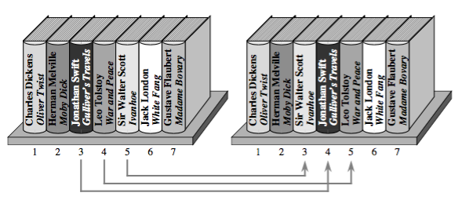
The key here is shifting Swift and Tolstoy to make room for Scott. To do this we first compare the author name Tolstoy with Scott. Finding that Tolstoy comes after Scott, we shift the book by Tolstoy one slot to the right from slot 4 to slot 5. Then we compare the author name Swift with Scott. Finding that Swift comes after Scott, we shift the book by Swift one slot to the right, from slot 3 to slot 4, which was vacated when we shifted the book by Tolstoy. Next we compare the author name Herman Melville with Scott. This time we find that Melville does not come after Scott. At this point, we stop comparing author last names because we have found that the book by Scott should be to the right of the book by Melville and to the left of the book by Swift. We can put the book by Scott into slot 3, which was vacated when we shifted the book by Swift.
In effect we are inserting each successive book into the part of the shelf that is sorted (known as the partially sorted section of the shelf) and do so by shift the books to the right in order to make room for this next book.
Back to Array Example
How do we go about this with arrays? We can translate the bookshelf idea as follows. The subarray A[0..i-1] will hold only the elements originally in the first i - 1 positions of the array, and they will be in sorted order.
To determine where the element originally in A[i] goes, insertion sort steps through A[0..i-1], starting at A[i-1] and going towards the left, shifting each element greater than this one by one position to the right.
Once we find an element that is not greater than A[i] or we hit the left end of the array, we drop the element originally in A[i] into its new position in the array.
Pseudocode & Code
Procedure INSERTION-SORT(A, n)
Inputs and Result: Same as SELECTION-SORT.
1. For i = 1 to n:
A. Set key to A[i] ,and set j to i - 1.
B. While j >= 0 and A[j] > key, do the following:
i. Set A[j + 1] to A[j].
ii. Decrement j (i.e., set j to j - 1).
C. Set A[j + 1] to key.
Note i starts at 1 because A[zero] will be the first element in the sorted subarray of our original array and the first element to be inserted (A[one]) will be placed based on this A[zero] element.
void insertion_sort(int a[], int n) { int i, j, key; for (i = 1; i < n; i++) { // i is dividing line key = a[i]; // marked item j = i-1; while (j >= 0 && a[j] > key) { a[j+1] = a[j]; // shift item right --j; // go left one position } a[j+1] = key; // insert marked item } }
Observe how the test in step 1B relies on the "and" operator && to short circuit. If the expression on the left, j > 0 is false, then it doesn't evaluate the expression on the right, A[j] > key. If it did try to access A[j] when j < 0, an array indexing error would occur.
The inner loop will terminate with j > 0 false whenever key is less than all the elements in A[1..i - 1]. When j becomes 0, each element in A[1..i - 1] has been shifted to the right and so step 1C drops key into A[one], right where we want.

(The red bordered square is the key and the rest are the sorted elements (a[j]))
If you wanted to use a loop invariant for proof of correctness, we can use the following invariant for the outer loop:
- At the start of each iteration of the loop of step 1, the subarray A[1..i-1] consists of the elements originally in A[1..i-1] but in sorted order.
Running Time
For the insertion sort procedure, the number of times that the inner loop iterates depends on both the index i of the outer loop and the values in the array elements.
The Best Case of insertion sort occurs when the inner loop makes zero iterations every time. For that to happen, the test A[j] > key must come up false the first time for each value of i. This only happens when the array A is already sorted at start of the procedure! In this case, the outer loop iterates n - 1 times, and each iteration of the outer loop takes a constant amount of time, so that insertion sort only takes \(\Theta(n)\) time.
The Worst Case occurs when the inner loop makes the maximum possible number of iterations every time. Now the test A[j] > key must always be true, and the loop must end because of the test j > 0 coming up false. Each element A[i] must travel all the way to the left of the array. This happens only if the array A starts in revere sorted order (sorted into nondecreasing order). In thisp case for each time the outer loop iterates, the inner loop iterates i - 1 times. Since the outer loop runs with i going from 1 up to n, the number of inner-loop iterations forms an arithmetic series:
\[1 + 2 + 3 + ... + (n - 1) + (n - 1)\]
which as we saw for selection sort is \(\Theta(n^2)\).
Since each inner-loop iteration takes constant time, the worst-case running time of insertion sort is \(\Theta(n^2)\). So selection sort and insertion sort have running times that are asymptotically the same.
Summary
Insertion sort works fundamentally by inserting elements from an unsorted set one at a time into a sorted set.
When do we use insertion sort?
Insertion sort is inefficient for large data sets but is efficient for incremental sorting. This situation might occur, for example, in a reservation system of a large hotel. Suppose one display in the system lists all guests, sorted by name, and is updated in real time as new guests check in. Using insertion sort, re-sorting requires only a single sweep of the data to insert a new name into the list. So insertion sort is preferable for almost-sorted data (less number of shifts needed).
Selection sort has one advantage over insertion sort, however: selection sort moves elements \(\Theta(n)\) times no matter what, but insertion sort could move elements up to \(\Theta(n^2)\) times, since each execution of step 1Bi of insertion sort moves an element.
- Return Value: void. Original array is altered so that its elements are sorted.
- Complexity: \(O(n^2)\) where n is the number of elements to be sorted
Divide And Conquer Sorts
The next two sorts (merge and quick) are part of the divide and conquer algorithmic paradigm that can be described as follows.
In divide and conquer, we break the problem into subproblems that are similar to the original problem, solve the problems recursively and then combine the solutions to the subproblems to solve the original problem.
Recall that in order for recursion to work, each recursive call must be on a smaller instance of the same problem that will eventually hit a base case.
Divide and Conquer general outline:
- Divide
- the problem into a number of subproblems that are smaller instances of the same problem
- Conquer
- the subproblems by solving them recursively. If they are small enough, solve the subproblems as base cases.
- Combine
- the solutions to the subproblems into the solution for the original problem.
It is good to note here that the subproblems are independent of each other.
Merge Sort
First off, merge sort has a running time of only \(\Theta(n log n)\) in all cases. In comparing this running time with the \(\Theta(n^2)\) worst case running times of selection sort and insertion sort we're trading a factor of n for a factor of only lg(n).
Even with the benefits noted above, merge sort does have a couple of disadvantages compared with the other two sorts we've seen.
Disadvantages:
- The constant factor we drop in the asymptotic notation is higher than for the other two algorithms. (Of course once the array size n gets large enough, that doesn't really matter)
- Merge sort does not work in place, meaning it has to make copies of the entire input array (in place means we can just swap elements). This differs from selection and insertion sort, which at any time keep an extra copy of only one array entry rather than copies of all the array entries. So if space is important you may not want to use merge sort.
When we sort the books on our bookshelf with merge sort, each subproblem consists of sorting the books in consecutive slots on the shelf. Initially we want to sort all n books in slots 0 to n - 1, but in a general subproblem we want to sort all the books in slots p through r.
Here's how we apply divide and conquer for mergesort.
- Divide by finding the number mid of the slot midway between p and r, (mid is our midpoint). We do so in the same way that we found the midpoint in the binary search: add p and r, divide by 2, and take the floor.
- Conquer by recursively sorting the books in each of the two subproblems created by the divide step: recursively sort the books that are in slots p through mid, and recursively sort the books that are in mid + 1 to r.
- Combine by merging the sorted books that are in slots p through mid and slots mid + 1 through r, so that all the books in slots p through r are sorted.
The base case occurs when fewer than two books need to be sorted (that is when \(p \ge r\), since a set of books with no books or one book is already trivially sorted.
To convert this to sorting an array, the books in slots p through r correspond to the subarray A[p..r]. Here is the merge sort procedure, which calls a procedure merge(A,p,mid,r) to merge the sorted subarrays A[p..mid] and A[mid+1…r]:
Merge-Sort Pseudocode & Code
Procedure MERGE-SORT(A,p,r)
Inputs:
A: an array
p, r: starting and ending indices of a subarray of A.
Result: The elements of the subarray A[p..r] are sorted
into nondecreasing order.
1. If (p >= r), then the subarray A[p..r] has at most one element and
so it is already sorted. Just return without doing anything.
2. Otherwise, do the following:
A. Set mid to floor( (p + r) / 2 ).
B. Recursively call MERGE-SORT(A,p,mid).
C. Recursively call MERGE-SORT(A,mid + 1, r).
D. Call MERGE(A,p,mid,r).
In C, to sort array of integers, we may write:
void merge_sort(int a[], int p, int r) { if (p >= r) return; else { /* In C, integer division truncates in the same manner as floor(). */ int mid = (p + r) / 2; // DIVIDE merge_sort(a, p, mid); // CONQUER merge_sort(a, (mid + 1), r); merge(a, p, mid, r); // COMBINE } }
Let's look at the procedure merge. Merge (not merge-sort but the helper for merging) is a procedure for taking the two sorted subarrays (sorted in 2B and 2C) into a single sorted subarray. Say we have the sorted subarrays below
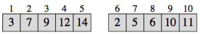
Using the merge procedure on these subarrays would give
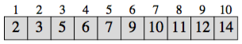
The merge sort process is illustrated as follows:

The real work happens in the merge procedure. Therefore, not only must the merge procedure work correctly, but it must also be fast. If we are merging a total of n element, the best we can hope fore is \(\Theta(n)\) time, since each element has to bed merged into its proper place, and indeed we can achieve linear-time merging.
Merge Bookshelf Example
Let's look at just the portion of a bookshelf from slot 9 through slot 14. Suppose that we have sorted the books in slots 9-11 and the books in slots 12-14.
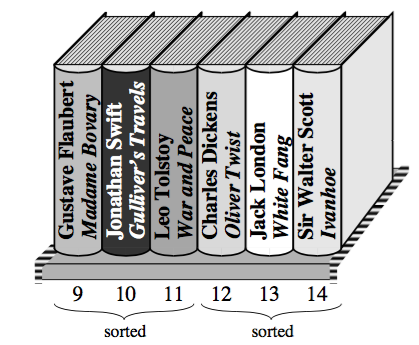
We pull out the books into slots 9-11 and make a pile of them, with the book whose author is alphabetically first on top, and we do the same with the books in slots 12-14 in a separate pile:
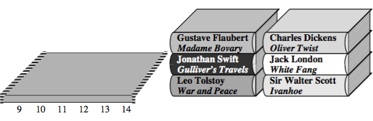
Because the two piles are already sorted, the book that should go back into slot 9 must be one of the books atop its pile. Either the book written by Gustave Flaubert or the book by Charles Dickens. Obviously Dickens comes before Flaubert, and so we move it Dickens into slot 9.
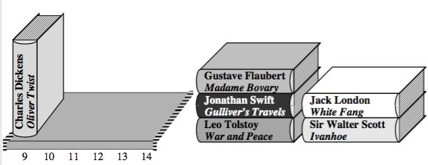
After we move Dickens into slot 9, the book that should go into slot 10 must be either the book still atop the first pile, by Flaubert, or the book now atop the second pile by Jack London. We move Flaubert's book into slot 10
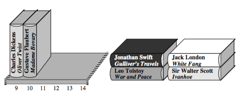
Next, we compare the books now atop their piles, which are by Jonathan Swift and London, and we move the book by London into slot 11. That leaves the book by Sir Walter Scott atop the right pile, and when we compare it with the book by Swift, we move the book by Scott into slot 12. At this point, the right pile is empty:
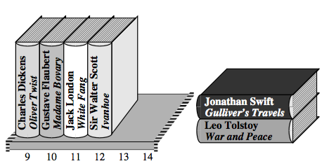
All that remains is to move the books in the left pile into the remaining slots, in order. Now all books in slots 9-14 are sorted:
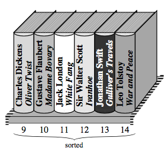
How efficient is merge procedure?
We move each book exactly twice: once to pull it off the shelf and put it into a pile, and once to move it from the top of a pile back onto the shelf. Furthermore whenever we are deciding which books to put back onto the shelf, we need to compare only two books: those atop their piles.
To merge n books, therefore, we move books 2n times and compare pairs of books at most n times.
Why pull the books off the shelf?
What if we had left the books on the shelf and just kep track of which books we had put into their correct slots and which books we hadn't? That could turn out to be a lot more work.
Why we DON'T merge in place
Suppose that every book in the right half should come before every book in the left half. Before we could move the first book from the right half into the first slot of the left half, we would have to shift every book that start in the left half to the right by one slot in order to make room. And then we'd have to do the same to put the next book that started in the right half into the second slot of the left half. We would have to shift half the books - all the books that started in the left half - each time we wanted to put a book that started in the right half into its correct slot.
Back to Array Examples
To merge the sorted subarrays A[p..mid] and A[mid + 1 .. r] into the subarray A[p..r], we start by copying the elements to be merged from array A into temporary arrays and then merge them back into A. Let n1 = (mid - p + 1) be the number of elements in A[p..q] and n2 = (r - mid) be the number of elements in A[mid + 1 .. r].
We create temporary arrays B with n1 elements and C with n2 elements, and we copy the elements in A[p..mid], in order, into B, and likewise the elements in A[mid + 1 .. r] in order, into C. Now we can merge these elements into A[p..r] without fear of overwriting our only copies of them.
We then merge the array elements in the same way we merge the books. We copy elements from that arrays B and C back into the subarray A[p..r], maintaining indices to keep track of the smallest element not yet copied back in both B and C, and copying back the smaller of the two. In constant time, we can determine which element is smaller, copy it back into the correct position of A[p..r], and update indices into the arrays.
Eventually one of the two arrays will have all its elements copied back to A[p..r]. This corresponds to the moment when only one pile of books remain. But we use a trick to avoid have to check each time whether one of the arrays has been exhausted: we place at the right end of each of the arrays B and C an extra element (sentinel) that is greater than any other element. Here we use ∞ as the sentinel's sort key, so that whenever an element with a sort key of ∞ is the smallest remaining element in its array, it is guaranteed to "lose" the contest to see which array has the smaller remaining element.
Once all elements from both arrays B and C have been copied back, both arrays have their sentinels as their smallest remaining element. But there's no need to compare the sentinels at this point, because by then we have copied all the "real" elements (the non-sentinels) back to A[p..r]. Since we know in advance that we'll be copying elements back into A[p] through A[r] we can stop once we have copied an element back into A[r]. We can just run a loop with an index into A running from p to r.
Merge Pseudocode & Code
Procedure MERGE(A,p,mid,r)
Inputs:
A: an array
p, mid, r: indices into A. Each of the subarrays
A[p..mid] and A[mid+1 .. r] is assumed to be already sorted.
Result: The subarray A[p..r] contains the elements originally in
A[p..mid] and A[mid + 1 .. r], but now
the entire subarray A[p..r] is sorted.
1. Set n1 to (mid - p + 1) and set n2 to (r - mid).
2. Let B[0..n1] and C[0..n2] be new arrays.
3. Copy A[p..mid] into B[0..n1] and copy
A[mid + 1 .. r] into C[0..n2].
4. Set both B[n1 + 1] and C[n2 + 1] to infinity.
5. Set both i and j to 0.
6. For k = p to r:
A. If B[i] <= C[j], then
set A[k] to B[i] and increment i.
B. Otherwise B[i] > C[j],
set A[k] to C[j] and increment j.
After steps 1-4 allocate the arrays B and C, copy A[p..q] into B and A[q + 1 .. r] into C, and insert the sentinels into these arrays, each iteration of the main loop in step 6 copies back the smallest remaining element to the next position in A[p..r], terminating once it has copied back all the elements in B and C. In this loop, i indexes the smallest remaining element in B, j indexes the smallest remaining element in C, and k indexes the location in A where the element will be copied into.
In C we might have:
void merge(int a[], int p, int mid, int r) { int n1, n2; // get sizes for temporary arrays n1 = (mid - p + 1); n2 = (r - mid); // temporary arrays w/ room for sentinel (+ 1) int b[n1 + 1], c[n2 + 1]; int i, j, k; // copy for (i = 0, j = p; i < n1; i++, j++) b[i] = a[j]; for (i = 0, j = mid + 1; i < n2; i++, j++) c[i] = a[j]; // enter sentinels b[n1] = INT_MAX; c[n2] = INT_MAX; i = 0, j = 0; // fill in array a by merging for (k = p; k <= r; k++) { if (b[i] <= c[j]) a[k] = b[i++]; else a[k] = c[j++]; } }
If we are merging n elements altogether (so that n = n1 + n2), it takes \(\Theta(nlg(n))\) time to copy the elements into arrays B and C, and constant time per element to copy it back into A[p..r], for a total merging time of only \(\Theta(n)\)
We claimed earlier that the entire merge-sort algorithm takes time \(\Theta(n lg(n))\). We will make the simplifying assumption that the array size n is a power of 2 so that every time we divide the array , the subarray sizes are equal. (In general, n might not be a power of 2 and so the subarray sizes might not be equal in a given recursive call. We'll ignore this in this handbook).
Running Time
Let's say that sorting a subarray of n elements takes time \(T(n)\), which is a function that increases with n (since, presumably, it takes longer to sort more elements). The time \(T(n)\) comes from the three components of the divide-and-conquer paradigm, whose times we add together:
- Dividing takes constant time, because it amounts to just computing index mid.
- Conquering consists of the two recursive calls on subarrays, each with n/2 elements. By how we defined the time to sort a subarray, each of the two recursive calls takes time T(n/2).
- Combining the results of the two recursive calls by merging the sorted subarrays takes \(\Theta(n)\) time.
Because the constant time for dividing is a low-order term compared with the \(\Theta(n)\) time for combining, we can absorb the dividing time into the combining time and say that dividing and combining, together, take \(\Theta(n)\) time. The conquer step costs T(n/2) + T(n/2), or 2T(n/2). Now we can write an equation for T(n):
\[T(n) = 2T(n/2) + f(n)\]
where \(f(n)\) represents the time for dividing and combining which, as we just noted, is \(\Theta(n)\). A common practice in the study of algorithms is to just put the asymptotic notation right into the equation and let it stand for some function that we don’t care to give a name to, and so we rewrite this equation as
\[T(n) = 2T(n/2) + \Theta(n)\]
We have defined the function T that describes the running time of merge sort in terms of the very same function! We call such an equation a recurrence relation, or just a recurrence. The problem is that we want to express T(n) in a non-recursive manner, that is, not in terms of itself. It can be a real pain in the neck to convert a function expressed as a recurrence into non-recursive form, but for a broad class of recurrence equations we can apply a cookbook method known as the “master method.” The master method applies to many (but not all) recurrences of the form
\[T(n) = aT(n/b) + f(n)\]
where a and b are positive integer constants. Fortunately, it applies to our merge-sort recurrence, and it gives the result that T(n) is \(\Theta(nlg(n))\).
Summary
Merge sort works fundamentally by breaking data into small sets (divide), sorting those sets (conquer), and then merging the resulting sorted lists together.
Merge sort does not work in place meaning that the sorted items do not occupy the same space as the original ones. That is, we need to use an auxillary structure (extra space) for handling tasks in the process of sorting. (\(O(n)\) extra space for merging).
When do we use merge sort?
- Return: void. Original array is altered so that its elements are sorted.
- Complexity: \(\Theta(nlg(n))\). This ruunning time applies to all cases of merge sort - best case, worst case, and all cases in between. (Each element is copied \(\Theta(nlg(n))\) times.
Quicksort
Like merge sort, quicksort uses the divide-and-conquer paradigm (and hence uses recursion) though in a different way.
- Quicksort works in place.
- Quicksort's asymptotic running time differs between the worst case and the average. In particular, quicksort's worst-case running time is \(\Theta(n^2)\), but its average-case running time is better: \(\Theta(nlg(n))\)
Quicksort Bookshelf Example
As with merge sort, we initially want to sort all n books in slots 0 to n, and we'll consider the general problem of sorting books in slots p through r.
- Divide by first choosing any one book that is in slots p through r. Call this book the pivot. Rearrange the books on the shelf so that all other books with author names that come before the pivot's author or are written by the same author are to the left of the pivot, and all books with names that come after the pivot's are to the right of the pivot.
This rearranging based on the pivot is called partitioning. Note that books to the left or right of the pivot are in no particular order. They are just "less" than the pivot (left of pivot) and "greater" than the pivot (right of pivot).
- Conquer by recursively sorting the books to the left of the pivot and to the right of the pivot. That is, if the divide step moves the pivot to slot q, then recursively sort the books in slots p through q-1 and recursively sort the books in slots q+1 through r.
- Combine - by nothing! Once the conquer step recursively sorts, we are done.
Why? All the books to the left of the pivot (in slots p through q-1) come before the pivot or have the same author as the pivot and are sorted, and all the books to the right of the pivot (in slots q+1 through r) come after the pivot are sorted. The books in slots p through r cant help but be sorted.
Quicksort Pseudocode & Code
Like merge sort, the base case occurs when the subarray to be sorted has fewer than two elements.
Procedure QUICKSORT(A,p,r)
Inputs and Result: Same as MERGE-SORT.
1. If p >= r, then just return without doing anything.
2. Otherwise, do the following:
A. Call PARTITION(A,p,r), and set q to its result.
B. Recursively call QUICKSORT(A,p,q-1).
C. Recursively call QUICKSORT(A,q+1,r).
In C we may have:
void quicksort(int a[], int p, int r) { if (p >= r) return; else { int q = partition(a,p,r); quicksort(a, p, q-1); quicksort(a, q+1, r); } }
Partitioning Bookshelf Example
The key to quicksort is partitioning. Just as we were able to merge n elements in \(\Theta(n)\) time, we can partition n elements in \(\Theta(n)\) time. Here's how we'll partition the books that are in slots p through r on the shelf. We choose the rightmost book of the set - the book in slot r - as the pivot. At any time, each book will be in exactly one of four groups, and these groups will be in slots p through r, from left to right:
- group L (left group): books with authors known to come before the pivot's author alphabetically or written by the pivot's author… followed by
- group R (right group): books with authors known to come after the pivot's author alphabetically, followed by
- group U (unknown group): books that we have not yet examined, so we don't know their authors compare with the pivot's author, followed by
- group P (pivot): just one book, the pivot.
We go through the books in group U from left to right, comparing each with the pivot and moving it into either group L or group R, stopping once we get to the pivot. The book we compare with the pivot is always the leftmost book in group U.
- If the book's author comes after the pivot's author, then the book becomes the rightmost book in group R. Since the book was left-most in group U, and group U immediately follows groups R and U one slot to the right, without moving any books.
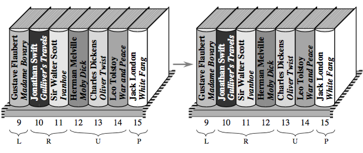
- If the book's author comes before the pivot's author or is the pivot's author, then we will make this book the rightmost book in group L. We swap it with the leftmost book in group R and move the dividing lines between groups L and R and between groups R and U one slot to the right.
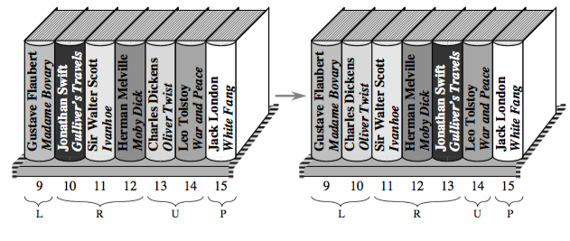
Once we get to the pivot, we swap it with the leftmost book in group R.
We compare each book with the pivot once, and each book whose author comes before the pivot's author or is the pivot's author causes one swap to occur. To partition n books we make at most n - 1 comparisons (since we don't have to compare the pivot with itself) and at most n swaps.
Notice that, unlike merging, we can partition the books without removing them all from the shelf. That is, we can partition in place.
Partition Back to Array
To convert how we partition books to how we partition a subarray A[p..r], we first choose A[r] (the rightmost element( as the pivot. Then we go through the subarray from left to right, comparing each element with the pivot. We maintain indices q and u into the subarray that divide it up as follows:
- The subarray A[p..q-1] corresponds to group L: each element is less than or equal to the pivot.
- The subarray A[q..u-1] corresponds to group R: each element is greater than the pivot.
- The subarray A[u..r-1] corresponds to group U: we don't yet know how they compare with the pivot.
- The element A[r] corresponds to group P: its holds the pivot.
The divisions, in fact, are loop invariants.
At each step, we compare A[u], the leftmost element in group U, with the pivot. If A[u] is greater than the pivot, then we increment u to move the dividing line between groups R and U to the right. If instead A[u] is less than or equal to the pivot, then we swap the elements in A[q] (the leftmost element in group R) and A[u] and then increment both q and u to move the right dividing lines between groups L and R and groups R and U to the right
Partition Pseudocode & Code
Procedure PARTITION(A,p,r)
Inputs: Same as MERGE-SORT
Result: Rearranges the elements of A[p..r] so that every element in
A[p..q-1] is less than or equal to A[q] and every element in
A[q+1..r] is greater than q. Returns the index q to the caller.
1. Set q to p.
2. For u = p to r - 1 do:
A. If A[u] <= A[r], then swap A[q] with A[u]
and then increment q.
3. Swap A[q] with A[r] and then return q.
By starting both of the indices q and u at p, groups L (A[p..q-1]) and R (A[q..u-1]) are initially empty and group U (A[u..r - 1]) contains every element except the pivot. In some instances, such as if A[p] <= A[r], an element might be swapped with itself, resulting in no change to the array. Step 3 finishes up by swapping the pivot element with the leftmost element in group R, thereby moving the pivot into its correct place in the partitioned array, and then returning the pivot's new index q.
In C we may have,
int partition(int a[], int p, int r) { int q, u; q = p; for (u = p; u < r; u++) { if (a[u] <= a[r]) { swap(a, u, p); q++; } } swap(a, q, r); return q; }
Summary
2 Basic Searching
We saw two variations on linear search of an array in describing algorithms (put link). Can we do better? It depends.
- Searching Unordered Arrays
- If we know
nothingabout the order of the elements in the array, then we cannot do better than our linear searches. In the worst case, we have to look through all \(n\) elements because if we don't find the value we're looking for in the first \(n-1\) elements it might be in the last, \(n\)th element. So we can't achieve a better worst-case running time than \(\Theta(n)\) if we know nothing about the order of the elements in the array.
- Searching Ordered Arrays
- However if the array is
sorted, let's say intonondecreasing order: each element is less than or equal to its successor in the array, according to some definition of "less than." When given ordered arrays we have techniques of searching that will never run worse than linear and will usually be even better.
Binary Search
Keep this in the back of your mind for now - Binary Search is a way of searching through an ordered array (sorted) and has the advantage of taking only \(O(log n)\) time to search an \(n\)-element array.
When the amount of data is small, linear search will be fast enough. But what about the case of having vast amounts of data? As we know, eventually a \(O(log n)\) algorithm will grow slower than a linear algorithm as \(n\) grows sufficiently larger.
Binary search is what we need for large data sets and is some what like the technique we use to search through a dictionary for a word.
Check the middle element. If that value is bigger than what we are looking for, look in the first half; otherwise, look in the second half. Repeat until the desired item is found or determined not to be present.
Bookshelf Example
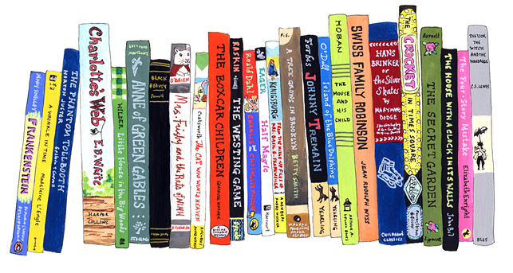
Suppose you're trying to find a book by Jonathan Swift on a shelf, filled with novels alphabetically ordered by author last names.
Go to the slot exactly halfway over on the shelf, find this middle book, and examine the author’s name.
Say you’ve found a book by Jack London. Not only is that not the book you’re searching for, but because you know the books are sorted alphabetically by author, you know that all books to the left of the book by London can’t be what you’re searching for.
By looking at just one book, you have eliminated half of the books on the shelf from consideration! Any books by Swift must be on the right-hand half of the shelf.
Now find the slot at the halfway point of just the right-hand half and look at the book there. Suppose it’s by Leo Tolstoy. Again, that’s not the book you’re searching for, but you know that you can eliminate all books to the right of this one: half of the books that remained as possibilities.
At this point, you know that if your bookshelf contains any books by Swift, then they're in the quarter of the books that are to the right of the book by London and to the left of the book by Tolstoy.
Next, find the book in the slot at the midpoint within this quarter under consideration. If it’s by Swift, you're done. Otherwise, you again eliminate half of the remaining books. Eventually, you either find a book by Swift or you get to the point at which no slots remain as possibilities. In the latter case, you conclude that the bookshelf contains no books by Jonathan Swift.
The Nitty Gritty
Binary search is performed on arrays. At any point, we're considering only a subarray, that is, the portion of the array between and including two indices; called low and high. Initially, low = 0 and high = n - 1, so that the subarray starts out as the entire array.
We repeatedly halve the size of the subarray that we're considering until one of two things happens: we either find the value we're searching for or the subarray is empty (that is low becomes greater than high - which is nonsense). The repeated halving of the subarray size is what gives rise to the \(O(log n)\) running time.
In more detail, let's say that we're searching for the value x in array A. In each step, we are considering only the subarray starting from A[low] and ending at A[high]. This subarray range can be denoted by A[low..high].
At each step we compute the midpoint, q, of the subarray by taking the average of low and high, and then dropping the fractional part if any: \(q = \lfloor (low + high) / 2 \rfloor\) (Note "floor", denoted \(\lfloor \rfloor\) is an operation that drops fractional parts. We can just use integer division to drop fractional parts when uses languages such as C and Java.)
We Check to see whether A[q] equals x; if it does, we are done, because we can just return q as an index where array A contains x.
If instead, we find A[q] does not equal x, we take advantage of the assumption that array A is already sorted.
Since A[q] != x, there are two possibilities:
either A[q] > x or A[q] < x.
- 1)
- We first handle the case where
A[q] > x. Because the array is sorted, we know that not only is A[q] greater than x, but also that every array element to the right of A[q] is greater than x. Therefore, we can eliminate from consideration all elements at or to the right of A[q]. We will start our next step with low unchanged, but with high set to q-1:

- 2)
- If instead we find that
A[q] < x, we know that every array element at or to the left of A[q] is less than x, and so we can eliminate these elements from consideration. We will start our next step with high unchanged, but with low set to q + 1

Pseudocode & Code
In pseudocode we have the following:
Procedure BINARY-SEARCH(A, n, x)
Inputs and Output: Same as LINEAR-SEARCH.
1. Set low to 0, and set high to n-1.
2. While low <= high, do the following:
A. Set q to floor( (low + high) / 2 ).
B. If A[q] == x, return q.
C. Otherwise (A[q] != x),
C1) if A[q] > x, then set high to q - 1.
C2) Otherwise (A[q] < x), set low to q + 1.
3. Return NOT-FOUND.
A simple basic example of this in C is:
int binary_search(int a[], int n, int x) { int low, mid, high; low = 0; high = n - 1; while (low <= high) { mid = (low + high) / 2; if ( a[mid] < x ) low = mid + 1; else if ( a[mid] > x ) high = mid - 1; else return mid; // x has been found } return -1; // x was not found }
Binary vs. Linear (a.k.a. Sequential) Searches:

Proof
In order to show that the BINARY-SEARCH procedure works correctly, we just need to show that x is not present anywhere in the array if BINARY-SEARCH returns NOT-FOUND in step 3.
We use the following loop invariant:
At the start of each iteration of the loop of step 2, if x is anywhere in the array A, then it is somewhere in the subarray A[low..high]
And a brief argument using the loop invariant:
- Initialization:
- Step 1 initializes the indices low and high to 1 and n, respectively, and so the loop invariant is true when the procedure first enters the loop.
- Maintenance:
- We argued above that steps 2C and 2D adjust either low or high correctly.
- Termination:
- If x is not in the array,then eventually the procedure gets to the point where low and high are equal. When that happens, step 2A computes q to be the same as low and high. If step2C sets high to q-1, then at the start of the next iteration, high will equal low + 1, so that low will be greater than high. If step 2D sets low to q + 1, then at the start of the next iteration, low will equal high + 1, and again low will be greater than high. Either way, the loop test in step 2 will come up false, and the loop will terminate. Because low > high , the subarray A[low..high] will be empty, and so the value x cannot be present in it. Taking the contrapositive of the loop invariant gives us that if x is not present in the subarray A[low..high], then it is not present anywhere in array A. Therefore, the procedure is correct in returning NOT-FOUND in step 3.
Summary
- Return Value: The index of the item we are targeting (searching for) if found, otherwise -1.
- Complexity: \(O(n)\), where n is the number of elements to be searched.